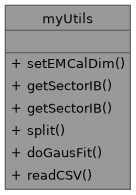
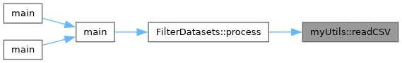

Collection of static utility functions for analysis modules. More...
#include <myUtils.h>

Static Public Member Functions | |
| static void | setEMCalDim (TH1 *hist) |
| Configure histogram axes for EMCal geometry. | |
| static std::pair< int, int > | getSectorIB (int iphi, int ieta) |
| Compute the CEMC sector and inner‑barrel (IB) index from tower phi and eta indices. | |
| static std::pair< int, int > | getSectorIB (int towerIndex) |
| Compute sector and ib indices for a given CEMC tower index. | |
| static std::vector< std::string > | split (const std::string &s, char delimiter) |
| Split a string into tokens based on a delimiter. | |
| static TFitResultPtr | doGausFit (TH1 *hist, Double_t start, Double_t end, const std::string &name="fitFunc") |
| Perform Gaussian fit on histogram within specified range. | |
| template<InvocableWithString Callable> | |
| static bool | readCSV (const std::filesystem::path &filePath, Callable lineHandler, bool skipHeader=true) |
| Reads a CSV (or any line-delimited) file and applies a handler function to each line. | |
Detailed Description
Collection of static utility functions for analysis modules.
Provides helpers to configure EMCal histogram dimensions, map tower indices to sector identifiers, split strings, perform Gaussian fits on TH1 objects, and read line delimited files with a user supplied callable.
All functions are static and do not maintain internal state, making them safe for use in any SubsysReco module without affecting the Fun4All node tree This comment was generated by openai/gpt-oss-120b at temperature 0.1.
Member Function Documentation
◆ doGausFit()
|
static |
Perform Gaussian fit on histogram within specified range.
- Parameters
-
hist pointer to TH1 histogram to be fitted start lower bound of fit range end upper bound of fit range name name identifier for fit function
- Returns
- TFitResultPtr object containing fit results This comment was generated by openai/gpt-oss-120b at temperature 0.1.
◆ getSectorIB() [1/2]
|
static |
Compute the CEMC sector and inner‑barrel (IB) index from tower phi and eta indices.
- Parameters
-
iphi Integer phi index of the tower (0‑based). ieta Integer eta index of the tower (0‑based).
- Returns
- std::pair where first element is the sector number and second element is the IB index within that sector. This comment was generated by openai/gpt-oss-120b at temperature 0.1.
◆ getSectorIB() [2/2]
|
static |
Compute sector and ib indices for a given CEMC tower index.
- Parameters
-
towerIndex linear index of the tower within the CEMC detector
- Returns
- pair of integers first element is the sector number second element is the ib number within that sector This comment was generated by openai/gpt-oss-120b at temperature 0.1.
◆ readCSV()
|
inlinestatic |
Reads a CSV (or any line-delimited) file and applies a handler function to each line.
- Template Parameters
-
Callable The type of the function/lambda to be called for each line. Must be invocable with a 'const std::string&'.
- Parameters
-
filePath The path to the input file. lineHandler A function, lambda, or functor that takes a 'const std::string&' (the line) and processes it. skipHeader If true, the first line of the file will be read and discarded.
- Returns
- true if the file was successfully opened and read, false otherwise.
Read a CSV file line by line and process each line with a user-provided callable.
This utility opens the file at filePath, optionally skips the first line (treated as a header), and then iterates over the remaining lines. For each line the lineHandler callable is invoked with the line contents. The function reports errors if the file cannot be opened or if an I/O error occurs during reading.
- Template Parameters
-
Callable Type of the callable object that accepts a const std::string&.
- Parameters
-
filePath Path to the CSV file to be read. lineHandler Callable invoked for each data line; receives the line as a string. skipHeader If true, the first line of the file is read and discarded.
- Returns
- true if the file was successfully processed (or reached EOF without error), false if the file could not be opened or an I/O error occurred. This comment was generated by openai/gpt-oss-120b at temperature 0.1.

◆ setEMCalDim()
|
static |
Configure histogram axes for EMCal geometry.
- Parameters
-
hist Pointer to TH1 histogram to be configured
- Returns
- None This comment was generated by openai/gpt-oss-120b at temperature 0.1.
◆ split()
|
static |
Split a string into tokens based on a delimiter.
- Parameters
-
s Input string to be split delimiter Character used as delimiter
- Returns
- Vector of non empty substrings This comment was generated by openai/gpt-oss-120b at temperature 0.1.
The documentation for this class was generated from the following files:
- /home/atif/sphenix-celloai/coresoftware/calibrations/calorimeter/calo_cdb/myUtils.h
- /home/atif/sphenix-celloai/coresoftware/calibrations/calorimeter/calo_cdb/myUtils.cc
Generated by